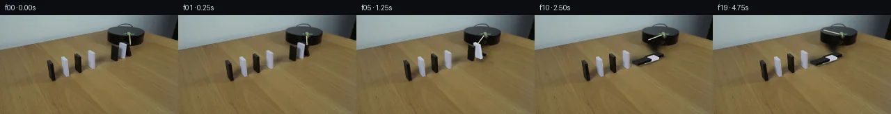

![首帧]()

Round 00
2026-11-05T00:30:31.263798+00:00像素候选变化代码 +279/−0inspection 更新
pixels aea07da209b03b6f · code e1b91b89e06c3863
查看本轮 generate.py 真实 diff
--- previous/generate.py
+++ current/generate.py
@@ -0,0 +1,279 @@
+"""Photograph continuation using local image repair and analytic cuboid projection.
+No external renderer, model, network access, or additional scene input is used.
+"""
+from pathlib import Path
+import math, json
+import numpy as np
+from PIL import Image, ImageDraw, ImageFilter
+import cv2
+from scipy.ndimage import gaussian_filter
+import artifact_io
+
+ROOT=Path(__file__).resolve().parent
+TMP=ROOT/'.tmp'; TMP.mkdir(exist_ok=True)
+W,H,S=256,144,4
+source=np.asarray(Image.open(ROOT/'first_frame.png').convert('RGB')).copy()
+
+# Screen projection axes of the tabletop, measured from the photographed pieces.
+ROW=np.array([-.940,.350])
+ACROSS=np.array([.890,.400])
+# Positive depth points toward the camera. The vertical axis is projected upward.
+VIEW=np.array([.890,.940,.688])
+
+# Front lower-left corners, width/thickness, vertical projection, initial top lean.
+# The first piece is the partly hidden black piece nearest the motor.
+pieces=[
+ dict(name='motor_black',b=np.array([178.0,56.7]),w=8.6,d=3.1,h=21.0,
+ up=np.array([-.125,-1.0]),color='black',start=.65,end=1.37,world=0.),
+ dict(name='middle_white',b=np.array([171.0,61.0]),w=8.6,d=3.1,h=22.0,
+ up=np.array([.030,-1.0]),color='white',start=1.01,end=1.73,world=11.),
+ dict(name='gap_black',b=np.array([159.5,63.7]),w=9.2,d=3.1,h=21.0,
+ up=np.array([.075,-1.0]),color='black',start=1.37,end=2.09,world=23.),
+]
+
+# Carefully bounded silhouettes of the photographed moving dominoes.
+photo_polys=[
+ [(175.7,38.0),(180.4,36.5),(186.4,40.3),(189.3,58.3),(184.1,60.6),(177.5,57.8)],
+ [(173.0,38.7),(181.7,41.3),(181.2,61.5),(176.9,64.0),(170.8,61.0),(171.5,42.2)],
+ [(162.0,41.5),(171.0,45.0),(169.3,66.5),(165.6,67.8),(159.4,64.0),(160.4,44.3)],
+]
+
+def poly_mask(poly,scale=S):
+ out=Image.new('L',(W*scale,H*scale))
+ ImageDraw.Draw(out).polygon([tuple(np.array(p)*scale) for p in poly],fill=255)
+ return np.asarray(out).astype(float)/255
+
+# Remove the original thin wooden stick, preserving the green motor attachment.
+rod_mask=np.zeros((H,W),np.uint8)
+cv2.line(rod_mask,(186,30),(188,45),255,3,cv2.LINE_AA)
+rod_mask[:30]=0
+rodclean=cv2.inpaint(source,rod_mask,3,cv2.INPAINT_TELEA)
+
+# A table-only clean plate. Move a donor region along the photographed grain.
+# Blend the donor's fine texture with an inpainted low-frequency estimate.
+objmask=np.zeros((H,W),np.uint8)
+for poly in photo_polys:
+ cv2.fillPoly(objmask,[np.rint(poly).astype(np.int32)],255)
+objmask=cv2.dilate(objmask,np.ones((3,3),np.uint8),iterations=1)
+# Include the upright dominoes' soft cast shadows, but preserve the motor shadow.
+shadowmask=np.zeros_like(objmask)
+cv2.fillPoly(shadowmask,[np.array([(163,59),(191,55),(211,65),(199,75),(167,72)],np.int32)],255)
+# Gradual shadow repair, rather than a hard-edged substituted rectangle.
+shadowmask=cv2.GaussianBlur(shadowmask,(9,9),2.0)
+repairmask=np.maximum(objmask,shadowmask)
+repairmask[:37]=objmask[:37]
+inpaint=cv2.inpaint(rodclean,(repairmask>32).astype(np.uint8)*255,6,cv2.INPAINT_TELEA)
+low=gaussian_filter(inpaint.astype(float),sigma=(2.0,2.0,0))
+yy,xx=np.mgrid[0:H,0:W]
+donor=source[np.clip(yy+31,0,H-1),np.clip(xx+39,0,W-1)].astype(float)
+fine=donor-gaussian_filter(donor,sigma=(1.6,1.6,0))
+repaired=np.clip(low+fine*.85,0,255)
+alpha=repairmask.astype(float)/255
+clean=rodclean.astype(float)*(1-alpha[...,None])+repaired*alpha[...,None]
+# The lower ellipse of the motor side bounds the wood revealed behind dominoes.
+# Restore only occluded pixels: all unobstructed platform pixels remain photographic.
+for y in range(35,47):
+ for x in range(170,192):
+ f=1-((x-181.0)/27.0)**2
+ bottom=34.5+9.4*math.sqrt(max(0,f))
+ if y+0.35<bottom and objmask[y,x]:
+ sample=rodclean[y,min(205,x+18)]
+ if sample.mean()>45:
+ sample=np.array([15,16,13])+(y-35)*-.24
+ clean[y,x]=sample
+clean=np.uint8(np.clip(clean,0,255))
+Image.fromarray(clean).save(TMP/'clean_plate.png')
+
+# Upright masks retain the photographed antialiasing by including boundary pixels.
… diff truncated; 192 more lines …